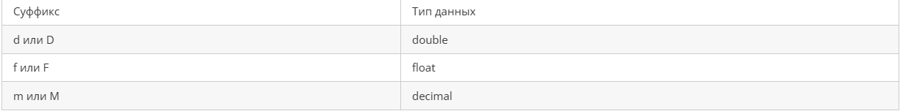

Содержание
В обзоре типов данных C# было в том числе было сказано, что от того, какой тип будет иметь наша переменная будет зависеть и то какие максимальные и минимальные значения она сможет принимать. Например, мы не сможем присвоить переменной типа byte значение более 255, так как Visual Studio сразу же сообщит нам, что тип byte такие значения не допускает. В этой части я постараюсь рассмотреть некоторые тонкости работы с целочисленными и вещественными типами данных в C#.
Как мы уже знаем, в C# есть несколько целочисленных типов данных, которые характеризуются максимально и минимально возможными пределами. Например, переменная типа int может содержать значения от от -2 147 483 648 до 2 147 483 647. Чтобы узнать пределы, которые может принимать переменная определенного типа можно выполнить вот такие действия:
Console.WriteLine($"Max value = {int.MaxValue}");
Console.WriteLine($"Min value = {int.MinValue}");
Здесь мы узнаем предельные значения для типа int.
Теперь, узнав максимальные и минимальные значения для типа int попробуем выполнить вот такое действие:
int i = int.MaxValue;
i = i + 1;
Console.WriteLine(i);
Вопреки всем ожиданиям, Visual Studio не сделает нам никаких предупреждений, программа скомпилируется и, даже, выдаст нам ответ. Правда не 2 147 483 648, а вот такой:
-2147483648
Всё дело в том, что если при вычислении значения переменной результат выходит за пределы типа, то возникает условие потери значимости или переполнения. Результат вычисления переменной должен находиться в диапазоне от минимального до максимального значения. Так, в приведенном выше примере мы намеренно получили переполнение и результат оказался равным минимальному значению для int. Соответственно, можно получить обратный результат, например,
int i = int.MinValue;
i = i - 2;
Console.WriteLine(i);
при этом нетрудно догадаться, что значение окажется равным
2147483646
то есть на единицу меньше, чем максимальное значение для типа int. Условия переполнения, в принципе, достаточно просто не допускать при разработке приложений, хотя периодически такие условия и имеют место быть в различных проектах. Теперь посмотрим ещё на один пример:
long longValue = 1000000 * 1000000;
Console.WriteLine(longValue);
По логике вещей, тип long в C# должен вполне справиться с задачей так как:
Вроде бы мы всё сделали корректно — указали для переменной тип long, но Visual Studio выдает ошибку!
Дело в том, что по умолчанию целочисленные литералы воспринимаются как int. Компилятор видит два числа — оба воспринимает как int и результат же ожидает как int, а так как результат вычисления выражения явно выходит за пределы int возникает ошибка. Чтобы этого не происходило можно воспользоваться двумя вариантами:
Любой школьник знает, что периодическая десятичная дробь 0.3 не равняется 1/3. Однако, не каждый, кто начинает изучать C# знает, что результатом вот такого действия:
Console.WriteLine(1/3);
будет
0
Здесь, опять же срабатывает правило — целое число (int) делится на целое число (int), следовательно и ответ должен быть int. А так как int не может содержать вещественных чисел, то получаем 0. Выход из сложившейся ситуации точно такое же, как и в предыдущем примере — надо указать компилятору, что хотя бы одно из чисел является вещественным. Для вещественных типов данных в C# можно использовать следующие суффиксы:

От того, какой суффикс мы укажем будет зависеть и точность вычисления. Продемонстрировать этом можно с помощью следующего примера:
Console.WriteLine($"float: {1 / 3f}");
Console.WriteLine($"double: {1 / 3d}");
Console.WriteLine($"decimal: {1 / 3m}");
Вывод консоли будет следующим:
float: 0,33333334
double: 0,3333333333333333
decimal: 0,3333333333333333333333333333
как видите, тип float имеет самую низкую точность вычисления. В C# вещественные литералы по умолчанию определяются как double.
В одном и том же выражении можно сочетать и целочисленные типы, и типы float и double. В этом случае целочисленные типы неявно преобразуются в один из типов с плавающей запятой. При необходимости тип float может неявно преобразовываться в double. При этом выражение вычисляется следующим образом:
В этой части мы рассмотрели некоторые особенности работы с числами в C#. В частности рассмотрели проблемы переполнения при сложении целочисленных значений, узнали как компилятору C# указывать какого типа численный литерал используется и возможности смешивания значений различных типов данных.